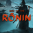

 Rise of the Ronin
Detalles
 |
|
| Tiempo de juego | No Jugado |
| Última actividad | Nunca |
| Añadido | 3/7/2025 2:01:28 |
| Modificado | 3/7/2025 2:26:25 |
| Estado de finalización | Not Played |
| Librería | Playnite |
| Fuente | 6TB STORE |
| Plataforma | PC (Windows) |
| Fecha de lanzamiento | 3/10/2025 |
| Puntuación de la Comunidad | |
| Puntuación de la Crítica | |
| Puntuación de usuario | |
| Género | Acción Aventura Rol |
| Desarrollador | KOEI TECMO GAMES CO., LTD. |
| Editor | KOEI TECMO GAMES CO., LTD. |
| Característica | Cloud Saves Compat. Parcial Con Mando Cooperativo Cooperativo En Línea Cromos De Logros De Multijugador Préstamo Familiar Subtítulos Disponibles Tablas De Clasificación De Un Jugador |
| Enlaces | Punto de encuentro Discusiones Guías Noticias Página de la tienda PCGamingWiki Logros |
| Tag | 3D Acción Aventura Cooperativos Cooperativos en línea Espadas Finales múltiples Históricos Multijugador asíncrono Mundo abierto Personalización de personajes Rol Rol de acción Sangriento Tercera persona Tipo «Dark Souls» Un jugador Violentos |
Descripción
Contenido del juego
Un RPG ambientado en el período Bakumatsu en el que los jugadores asumen el papel de un ronin, forjando su propio destino en un mundo abierto. El juego incorpora un sistema de finales múltiples, lo que permite a cada jugador elegir a qué facción apoya, ya sea "contraria al shogunato", "a favor del shogunato" o las "fuerzas occidentales", lo que cambia drásticamente el desenlace de la historia.El juego añade numerosas funciones de PC, como las pantallas ultraanchas. También incorpora mejoras como resolución 8K, 120 FPS, sonido 3D y configuración personalizable de teclado y ratón, lo que enriquecerá tu experiencia de juego.

Historia
Japón, 1863. Tras tres siglos bajo el gobierno del shogunato Tokugawa, los barcos negros de Occidente llegan al país, que se sume en un estado de caos. En medio de la guerra, las enfermedades y la inestabilidad política, un guerrero sin nombre forja su propio camino con el futuro de Japón en sus manos.Funciones del juego
Nuevas funciones exclusivas para la versión de Steam®:
- Compatibilidad con resolución 8K- Compatibilidad con DirectX 12 Ultimate
- Compatibilidad con pantallas ultraanchas y superultranchas
- Compatibilidad con 120 FPS
- Compatibilidad con Ray tracing
- Compatibilidad con sonido 3D
- Controles de teclado y ratón personalizables
- Compatibilidad con AMD Fidelity FX Super Resolution
- Compatibilidad con NVIDIA DLSS y Reflex
- Menú de interfaz compatible con ratón
- Compatibilidad con tecnología de gráficos Intel XeSS
Da forma a tu propia historia con numerosas decisiones y múltiples finales.
En el papel de un guerrero sin nombre, un ronin, tu destino depende de las decisiones que tomes. Te cruzarás con figuras históricas y facciones con ideologías enfrentadas, como el líder de la facción contraria al shogunato, Ryoma Sakamoto, y el "Shinsengumi", una organización afiliada al shogunato liderada por Isami Kondo, experimentando el caos del período Bakumatsu. Tendrás que tomar decisiones vitales como si asesinar o proteger a figuras clave como Naosuke Ii, creando así tu propia historia gracias al sistema de finales múltiples.
Personaliza tus armas y estilos de combate como prefieras y disfruta de un combate accesible a la par que profundo.
Emplea diversas clases de armas cuerpo a cuerpo, como katanas, lanzas y odachis, cada una con distintos estilos de combate disponibles. Elige tu combinación en función de las armas de tus oponentes y tu estilo de combate personal para disfrutar de un amplio abanico de tácticas. Además hay numerosas armas de largo alcance, incluyendo armas de fuego y arcos, que podrás usar cuando la situación lo requiera.
Explora las bellas ciudades de Edo, Yokohama y Kioto en forma de mundo abierto.
En el paisaje multicultural de Edo, Yokohama, y Kioto durante el período Bakumatsu, podrás explorar paisajes espectaculares que cambian con el paso de las estaciones, mostrando maravillas como la floración de los cerezos o las hojas en otoño. Usa una cuerda para subir a tejados y surca los aires con el planeador "Avicula." Además, guarda tus vistas favoritas en el "modo foto".
Da un aspecto único a tu personaje
Elige sus rasgos, su pelo y su maquillaje, así como la forma de su cuerpo y su voz. Tu protagonista, tu Filo Velado, está en tus manos. Ten en cuenta que obtendrás más ropa y objetos con los que personalizar tu aspecto conforme avances en el juego.